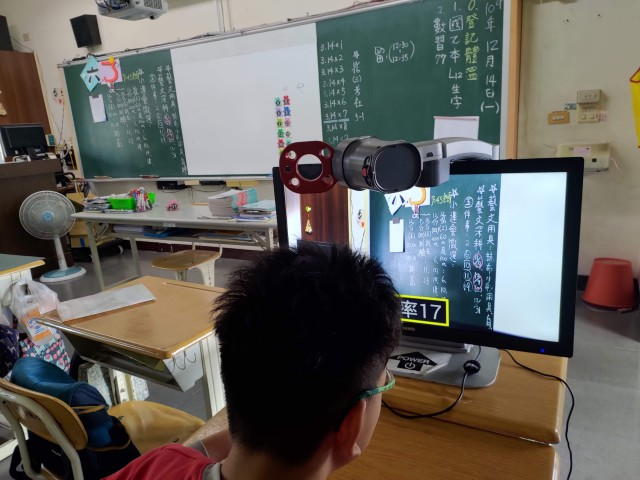
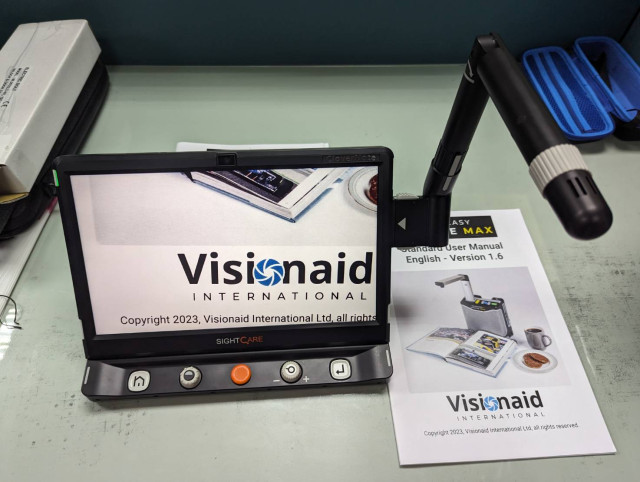
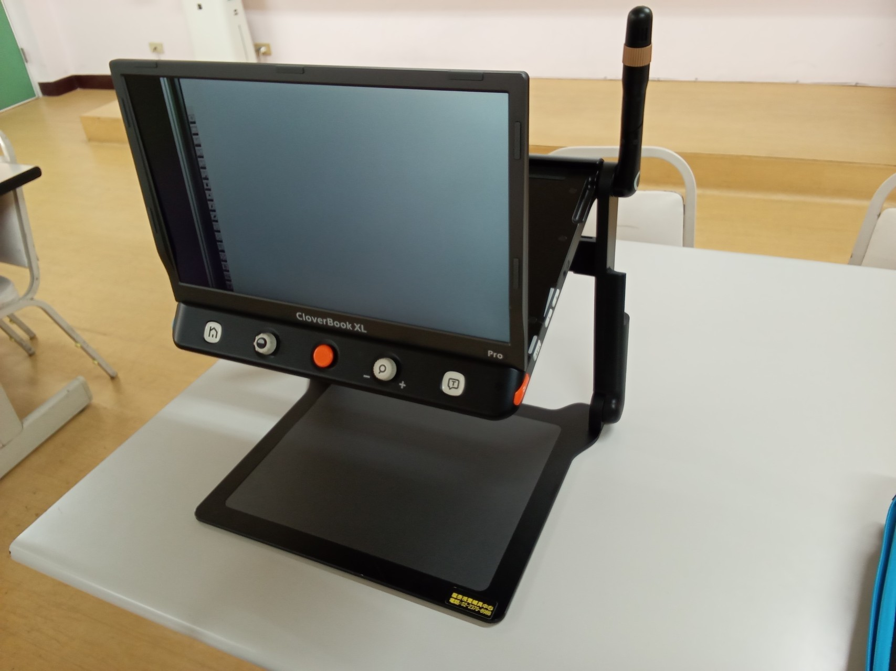
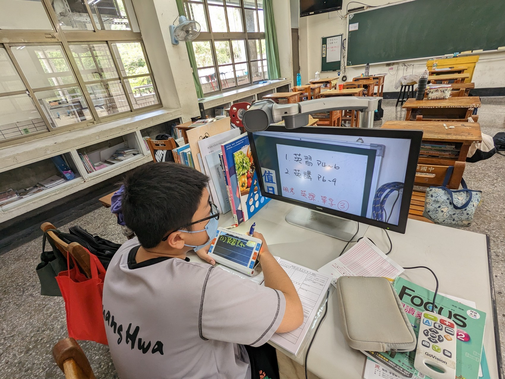

<section role="region" aria-label="桌上型擴視機">
    <h2>桌上型擴視機</h2>
    <div class="img-grid-4">
        <figure>
            
            <figcaption>桌上型擴視機</figcaption>
        </figure>
        <figure>
            
            <figcaption>桌上型（另款）</figcaption>
        </figure>
        <figure>
            
            <figcaption>桌上型（四）</figcaption>
        </figure>
        <figure>
            
            <figcaption>雙擴視機應用</figcaption>
        </figure>
    </div>
    <div class="two-col" style="margin-top:.4em">
        <div class="col-box">
            <h3>優點</h3>
            <ul>
                <li>螢幕尺寸大</li><li>可放大倍率高</li><li>可調整項目多</li><li>部份機種可連接電腦</li>
            </ul>
        </div>
        <div class="col-box" style="background:#fff3e0">
            <h3>缺點</h3>
            <ul>
                <li>只能定點使用</li><li>需電源插座</li>
            </ul>
        </div>
    </div>
</section>
